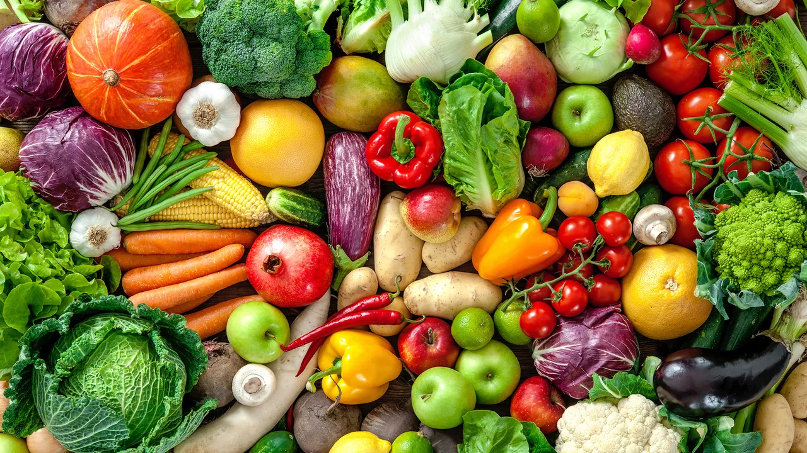

A SHORTER JOURNEY TO BETTER FOOD
Good food has a farmer behind it.
Farm2Home is a direct-to-home marketplace for the people who grow our food and the families who care about eating it well.
Shop the harvestWHAT WE BELIEVE
Make the distance smaller.
-
01
Freshness is a feeling
Food should taste like the place it came from. We keep harvests close and the chain short.
-
02
Farmers deserve more
Transparent prices and a direct relationship help the people who grow our food thrive.
-
03
Trust grows slowly
We verify every farmer, check every order and keep our promises visible.
-
04
Local is a superpower
Healthy regional food systems make healthier homes and a more resilient future.

OUR MISSION
Every order can make the food system feel a little more human.
We started Farm2Home with a simple question: what if buying groceries felt less like a transaction and more like a relationship?
Today, we connect households across Maharashtra with farmers in Nashik, Pune, Ahmednagar, Sangli and Kolhapur. No unnecessary layers. No mystery markups. Just food with a fairer journey.